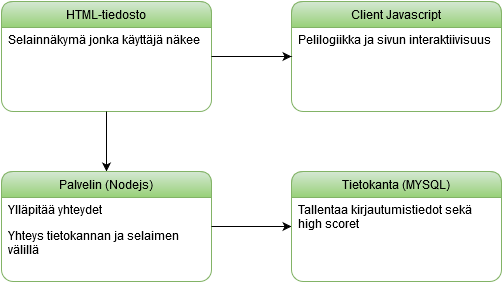

Ryhmässä työskentelee ja on ilmoittanut osallistumisesta ryhmän muille jäsenille seuraavat henkilöt.
Tuisku Sa
Sami Ka
Ville Sa
Vera Lö
Jani Ra
Tarkempaa tehtävänjakoa ei ole tehty, mutta tähän mennessä varsinaisesta matopelistä on vastannut Tuisku ja Sami ja tietokantapuolta sekä kirjautumista on hoitaneet Vera ja Ville

Käyttäjän käyttöliittymä tulee sisältämään listaukset pelissä saavutetuista high scoreista, itse matopelin sekä chat -toiminnon. Käyttäjä voi rekisteröityä sovellukseen voidakseen koettaa saavuttaa uuden high scoren.
Palvelin toteutetaan Node.js ympäristössä, palvelin kykenee välittämään käyttäjien syötteet muille palvelimeen yhdistyneille käyttäjille mahdollisimman reaaliaikaisesti. Palvelin on yhteydessä tietokantaan, joka sisältää tietueita mm. pelaajan nimelle, suurimmalle pistemäärälle sekä salasanalle.
Tämän lisäksi palvelimen perustehtäviin kuuluu peli tiedoston lähettäminen palvelimeen yhdistäville käyttäjille.
Aikataulun osalta pyritään noudattamaan Verkkosovelluskehitys-kurssin moodletilasta löytyvää aikataulua